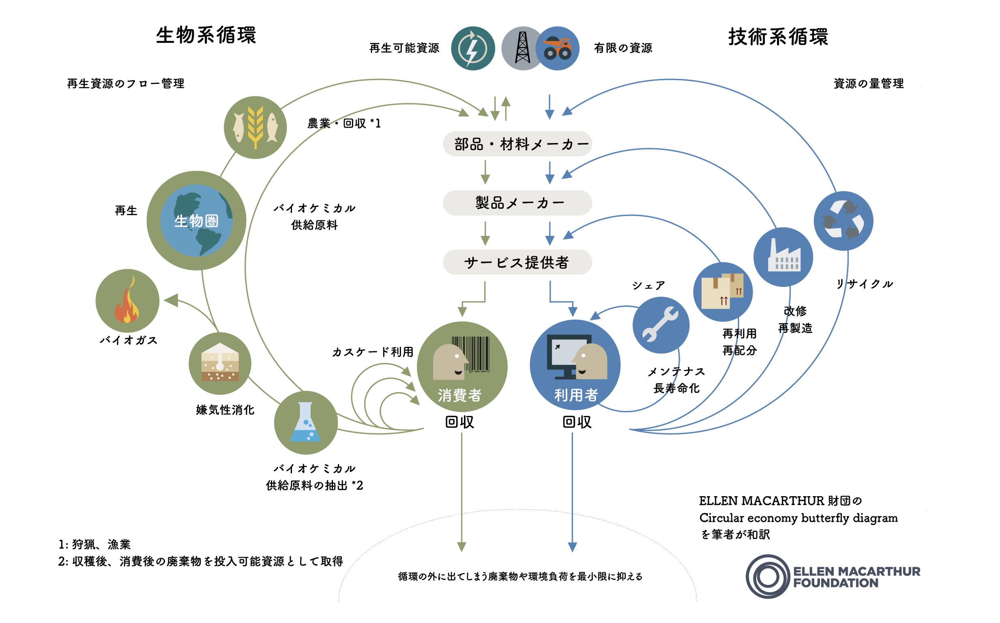
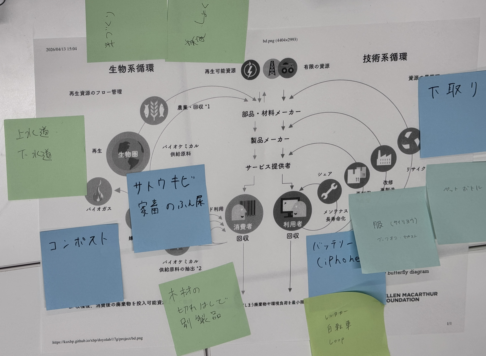

サーキュラーエコノミーについて
2026/04/16
【What is "サーキュラーエコノミー"】
そもそも、サーキュラーエコノミーってなあに？
・・・簡単に言えば、回る経済！
ありとあらゆるモノを循環させて、廃棄をできるだけなくす”エコな”経済！！

バタフライダイアグラムって？
サーキュラーエコノミーについて調べていると、だいたい出てくるこの言葉。
これは、上記の図のこと！
矢印が蝶々に似てることからその名がついた、サーキュラーエコノミーの根幹をなす
概念のことです！
この図では、世の中のありとあらゆる商品のリサイクルの流れを「生物系」と「技術系」
なものに分けていて、簡単に言うと・・・
生物系循環＝地面から上のモノを原料とする商品
技術系循環＝地面から下のモノを原料とする商品
です！
ただ、この図だけだと分かりずらいので、実際の例をグループワークで考えてみることにしました！
【グループワーク】

グループ内では、より身近な商品やサービスが多いのか、技術系循環に該当する実例はすぐ出てきて、
生物系循環のそれはわりかし時間がかかりました。
グループワークの追加課題で、なぜそういった商品が選ばれない・選ばれにくいのだろう？
という、普及に対する問いがあったのですが、「現状、新品のモノと比べて金銭的負担が大きいこと」や、
「そもそも、リサイクル品に触れる機会が少ない」、「前の利用者がいた、ということに対する拒絶感」
といった意見が出てきました。
人間に想像力がある以上、気にする人だったら前の利用者に対してはどうしようもないと思いました。
が！、
新品のものより安ければ、その拒絶感を上回るメリットになりうるから、やっぱり値段って
商品やサービスを選ぶ上で重要な項目なんだなあとも思いました！！
例えば中古のパソコン！
自分が今使ってるのも中古ですが、ほぼ新品同様で最高です！
約20万円で購入しましたが、発売当時の販売価格は50万円を超えてたみたいなので、
30万円も得してラッキーでした！
購入する時に、前の利用者に対する拒絶感はありませんでしたが、大手の中古販売業者からの購入
でしたので、信頼感も追加で必要なのかなとも思いました！